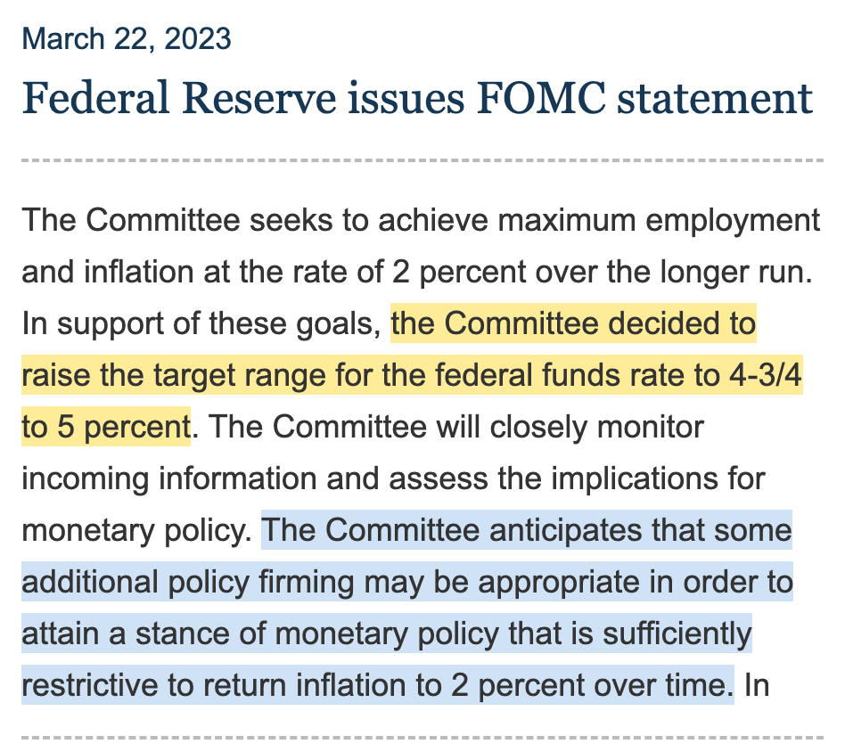
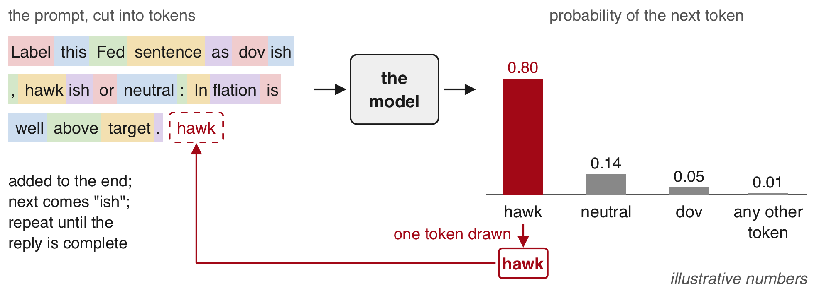
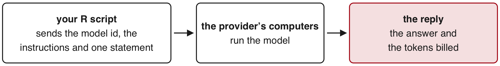
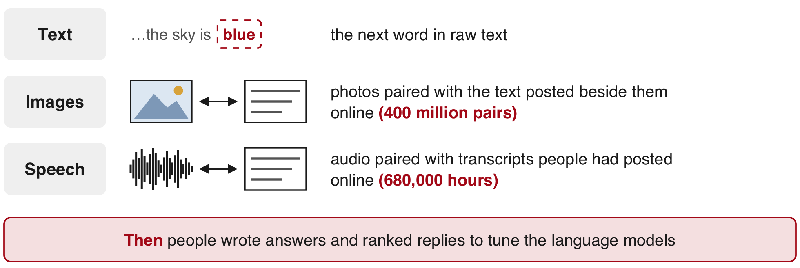
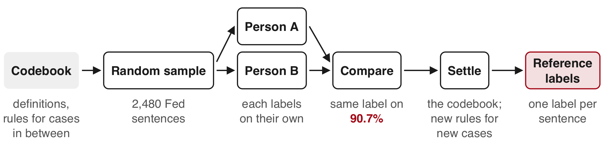
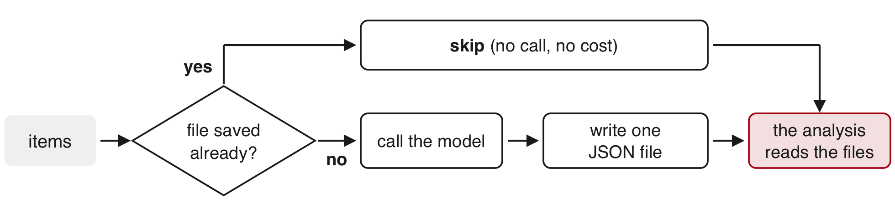
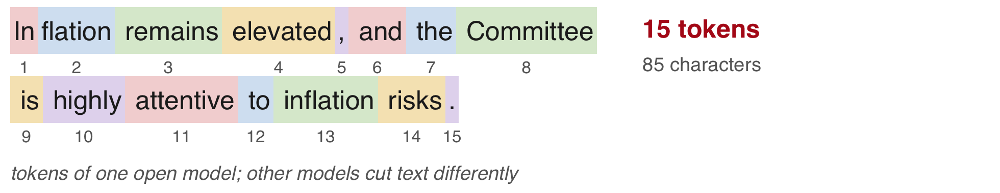
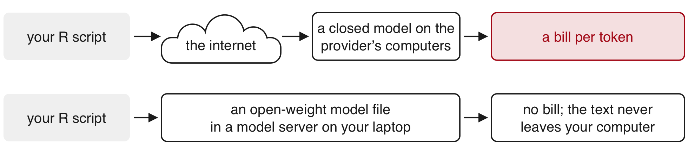
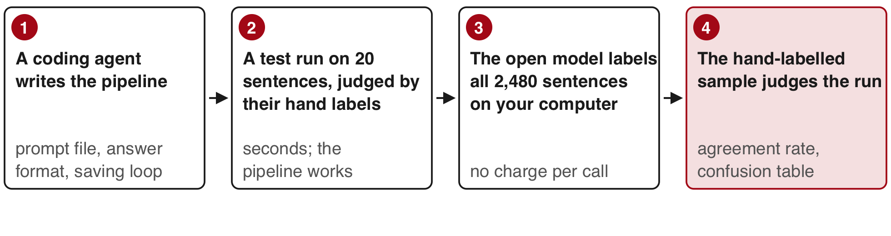

How to use a large language model to read text and return variables, and how to know when to trust what it returns, in four sections: when to use a language model; what a label is and what hand labels are for; one classification run on a closed model from R, from the data to the bill; and the same run on an open-weight model on your own computer. Two tasks run through the session, both on text from the Federal Reserve. The first reads the target range for the policy rate out of each of the 171 policy statements since 2006 and compares it with the Fed’s own daily series. The second labels 2,480 sentences from Fed documents as hawkish, dovish or neutral and compares the labels with those two people made by hand.
The project. Install the package once, in the R Console: install.packages("jsonlite"). Download 17-text-llms.zip, unzip it, and open 17-text-llms.Rproj, so that R starts in the project folder. Nobody needs an API key: every model reply was saved before class and ships in the folder. It holds:
fomc_statements.csv: every policy statement of the Federal Open Market Committee from January 2006 to September 2026 (date, url, words, text, scheduled).
fred_target_range.csv: the Fed’s target for the policy rate on every day, from FRED.
tdw_sentences.csv: 2,480 sentences from Fed minutes, press conferences and speeches, each labelled by hand (Trillion Dollar Words).
lm_words.csv: the positive and negative word lists of Loughran and McDonald.
codebook.txt and range_prompt.txt: the two prompts sent to the model.
model_setup.R, save_replies.R, run_all.R and demo.R: the code that made the closed model’s replies (needs ellmer and a key); run_local.R: the open model’s run (needs ellmer and a model server).
replies/ and demo/: every saved reply, raw and as CSV files.
statement_sentences.csv: the 171 statements cut into sentences.
README.txt and SOURCE.txt: how the replies were made, and each source with its terms of use.
Objectives
By the end of this session you can:
Say what a language model can do with text (classify, extract fields, match names), with a research example of each, and decide whether a text task calls for a regular expression, a language model or a person.
Explain what a label is and what hand labels are for: a few hundred random ones check a model’s error rate, thousands train a model, and an outside record can replace them; and how two people make them.
Follow a classification run on a closed model from R: the codebook as the prompt, a fixed answer format, the saved raw reply, and the agreement rate, base rate and confusion table against the hand labels.
Run the same classification on an open-weight model on your own computer and compare its labels, speed and cost with the closed model’s, with a coding agent writing and running the pipeline.
Explain why a reply can change between runs, and keep a result reproducible: one model id, every raw reply saved, reruns from disk.
Plan for today
When to use an LLM What a language model does · three things it can do with text · a regular expression, a model or a person · one task both ways · caveats · Exercise 1
The use of labels What a label is · checking a model’s error rate · hand labels to train a model or to check it · how two people make them · agreement
Using a closed LLM 2,480 Fed sentences labelled by hand · the codebook as the model’s instructions · the call from R · one saved reply · five sentences: you, then the model live · why every reply is saved · the score on all 2,480 · where the errors are · Exercise 2 · the cost
Using an open-weight LLM What an open-weight model is · downloading one · the same call from R · open against closed on 2,480 sentences · what hardware buys you · a coding agent runs it · the stance of every Fed statement, 2006–2026
The Fed is the Federal Reserve.
The Fed’s statement of 22 March 2023

Today’s running example is the text the Fed publishes. The FOMC, the rate committee of the US central bank (the Fed), publishes a statement after each meeting. A statement sets a target range for the main interest rate and hints which way rates go next.
target range: the band for the federal funds rate, the rate on overnight loans between banks.
hawkish: pointing to higher rates, to slow inflation.
dovish: pointing to lower rates, to support jobs and growth.
Yellow: the target range the statement sets. Blue: a hint about future rates (“firming”: raising them). Board of Governors of the Federal Reserve System; public domain.
The project holds all 171 statements, 31 Jan 2006 to 16 Sep 2026. The FOMC meets eight times a year on a schedule. This meeting came 12 days after Silicon Valley Bank, a large US bank, failed (10 Mar 2023). Read the blue sentence aloud: it is hawkish.
The FOMC is the Federal Open Market Committee of the Federal Reserve (“the Fed”), the US central bank. It sets the rate and publishes a statement after each meeting. A central bank is the institution that sets a country’s main interest rate; other examples are the People’s Bank of China and the European Central Bank. The federal funds rate is the rate banks charge each other for overnight loans, and “4-3/4 to 5 percent” is 4.75 to 5. Hawkish hints point to tighter monetary policy (the central bank’s setting of interest rates); dovish hints point to easier policy.
Two variables from the same statement
A language model reads the Fed’s statement of 22 March 2023 and returns a number and a judgement.
The target range
The stance of a sentence
The model reads
one whole statement
one sentence at a time
Example
“…the Committee decided to raise the target range for the federal funds rate to 4-3/4 to 5 percent”
“The Committee anticipates that some additional policy firming may be appropriate…”
The model returns
lower = 4.75, upper = 5
one label (here hawkish)
Checked against
FRED, the Fed’s own daily record of the range
labels two people made by hand (stance has no official record)
FRED: the free data service of the Federal Reserve Bank of St. Louis. stance: which way a sentence leans, toward higher rates (hawkish), lower rates (dovish), or neither (neutral).
Both examples come from the statement of 22 March 2023 on the previous slide. The model returns two numbers for the target range, and for stance one label: hawkish, dovish or neutral. Section 1 covers the target range; sections 3 and 4 cover stance. language model: a program that writes a reply to written instructions (section 1). The first variable has a right answer recorded elsewhere; the second is a judgement, so people make the reference by hand.
1 · When to use an LLM
What a language model does

LLM (large language model): a model trained on a vast amount of text to predict the next token; “model” on these slides means one. token: a word or a piece of a word. prompt: the instructions plus the item you send. reply: the text the model writes back, one token at a time.
A word count, the older tool, scores each word on its own from fixed lists of good and bad words: confident counts as good even after “not”, and “not” and “despite” count for nothing.
The model reads every token with the tokens around it before it writes, so “not yet confident” reads as doubt.
A phone keyboard’s next-word suggestion works the same way, trained on far less text.
Three things a language model can do with text
Each use turns text into a variable. Classifying picks a label from a list; extracting copies pieces out of the text; matching decides whether two names mean the same firm. edit distance: the number of characters to change to turn one name into the other. The examples, each explained on the next slides: a takeover headline, a misspelled survey answer, a stock analyst’s report, a firm name written two ways.
All four examples are real and used in published research.
A regular expression (a written pattern) can do some extraction when the wording never changes. The other uses depend on what the words mean, which is where a model helps.
The extraction paper is by Li, Mai, Shen, Yang & Zhang. The survey example comes from Mellon et al. (the journal Research & Politics, 2024); “Immergration” is the respondent’s own spelling. The name pair comes from Allen & Hatfield (Federal Reserve working paper, 2025).
JFE: Journal of Financial Economics; RFS: Review of Financial Studies; AER: American Economic Review; JEL: Journal of Economic Literature.
Classifying text: sentiment and stance
Sentiment: whether a text is good or bad news for someone.
Stance: which way a text leans, such as toward higher or lower interest rates.
“Cigna Calls Off Humana Pursuit, Plans Big Stock Buyback”
For Humana’s stock
A language model
bad news: a buyer willing to pay above market price walked away
Cigna, a US health insurer, had been trying to buy Humana. Headline from December 2023; example from Lopez-Lira & Tang, working-paper version, pp. 15–16. JFE: Journal of Financial Economics.
Lopez-Lira & Tang’s model read 159,137 company news headlines (2021–2024) and answered whether each was good, bad or unclear for the stock. They used no hand labels: the answers were checked against how the stocks then moved, and they predicted returns.
On earnings calls, managers answer questions from stock analysts each quarter. In de Kok’s study the model labelled whether each answer dodged the question, and it agreed with labels people made by hand on 96% of answers.
In December 2023 Cigna had been trying to buy Humana; both are US health insurers. The model called the headline bad news for Humana’s stock, since a buyer would have paid more than the market price for Humana’s shares. The commercial sentiment score for the same headline was +0.65 on a scale from −1 to +1 (good news).
Section 3 classifies sentences from the US central bank (the Fed) as hawkish (pointing to higher interest rates), dovish (lower) or neutral.
Classifying open-ended survey answers
Survey researchers call this coding. It is the same task as classifying headlines, with more categories (50 in this survey), written rules for each in a codebook, and answers typed by respondents, misspellings included.
Answer to “What is the single most important issue facing the country?”
Category
“a bad economy”
economy
“Immergration”
immigration
A keyword search for “immigration” misses the misspelled answer.
Extracting copies named pieces out of a document into columns, one field per column. A label picked from a list is classification.
Field
Copied from an analyst report on Macy’s, March 2012
cause
“focused selling culture”
effect
“double-digit earnings growth through 2015”
Li, Mai, Shen, Yang & Zhang (RFS, 2026): a model read the culture passages of about 2.4 million analyst reports. It extracted cause and effect, and classified each passage’s culture type and tone.
On 200 passages labelled by hand, the culture type was right 98.5% of the time.
Analyst report: a stock analyst’s report on a company, here by JP Morgan. Review of Financial Studies; example from the authors’ working-paper version.
In full: the model read the passages on corporate culture in about 2.4 million reports by stock analysts and returned three fields for each: the type of culture (one of six), its tone, and cause-and-effect statements. Checked against 200 passages the authors labelled by hand, it was right on the culture type 98.5% of the time, and on the tone 97.5%. The example comes from an analyst report on the retailer Macy’s, March 2012.
Today’s own extraction (section 1): the target range for the Fed’s main interest rate, read from each of the Fed’s 171 policy statements.
Matching names across datasets
The same firm is written differently in different files, so linking two datasets means matching names.
Dell (JEL, 2025): matching 1950s Japanese firm records with a language model’s embeddings (numbers a model assigns to a text, close for texts that mean the same), trained further on hand-linked examples, found the right firm 91% of the time, against 27% for edit distance (the number of characters you must change to turn one name into the other).
Name in the second list
The same firm as “Mellat Insurance Company”?
Edit distance
“Mellat Ins. Co.”
yes
11
“Mellot Insurance Corp.”
no, a different firm
5
Edit distance calls the different firm the closer match. A model reads “Ins.” as “Insurance” and “Co.” as “Company”.
Name pair from Allen & Hatfield (Federal Reserve working paper, 2025), on firms in the US sanctions list. Edit distances from R’s adist().
Choosing the tool for the task
Three tools turn text into a variable. The task decides which one:
A pattern (regular expression)
A language model
A person
Suits
a fixed format: dates, codes
meaning that changes with the wording
few items, or the reference labels
Cost
free
per token, or free on your own computer
about 15 seconds a sentence
Speed on today’s data
171 Fed statements in under a second
the same 171 in 18 seconds
2,480 Fed sentences in about 10 hours
Same answer every run
yes
not guaranteed
not guaranteed either
Checked against
example strings, or an outside record
an outside record, or a hand-labelled sample
a second person
Start from the task: if the wording never changes, write a pattern; if meaning matters, use a model and check it; if the items are few or the labels are the reference, read them yourself. regular expression: a written search pattern that matches text by its form.
A pattern also suits repeated sentences, and you check it against example strings you write. A person also suits high-stakes items. The speeds are for reading the 171 Fed statements (pattern and model) and for labelling the 2,480 Fed sentences by hand.
Testing a pattern and a model on one task
The choice, tested on one task. From each of the Fed’s 171 policy statements (2006–2026), read the target range for the federal funds rate, the Fed’s main interest rate, once with a pattern and once with a model, and compare each with FRED, the Fed’s own daily record of the range (from the Federal Reserve Bank of St. Louis).
A regular expression
A language model
Right, against FRED
145 of the 145 it read
170 of 171
No answer
26: the 25 statements of 2006–2008 that set one number (“at 5-1/4 percent”), and 17 Aug 2007, which states no target
1: 17 Aug 2007, left empty as its instructions said
Time and cost
under a second, free
18 seconds, about 47 cents
The pattern would need a second pattern for the single-number years; the model read both wordings. When the wording is fixed, the free pattern does the job. The code for both, step by step, is on the session page.
The target range, step by step
The code behind the slide “Testing a pattern and a model on one task”: the model called once per statement, the regular expression, FRED, and the comparison.
Calling a model from R, for the target range

model_setup.R and run_all.R (parts), instructor's computer; needs ellmer and an API key in ~/.Renviron
library(ellmer) # install.packages("ellmer") once; calls language models from RMODEL <-"<model id>"# the full model id from the provider's list, written onceRANGE_PROMPT <-paste(readLines("range_prompt.txt"), collapse ="\n")chat <-chat_anthropic(system_prompt = RANGE_PROMPT, model = MODEL, cache ="none")
API: an address that takes a request from your program and sends back a reply. API key: a password that identifies your account and bills it for each call. It lives in ~/.Renviron, a text file in your home folder that R reads when it starts; never in a script.
system prompt: the instructions sent with every item. pinned model: the full id of one fixed model version, written once in MODEL. provider: the company that runs the model. cache = "none" turns off prompt caching, so every piece of text sent is billed at one price (caching is explained on the session page).
Never open ~/.Renviron on the projector. Getting a key is on the page.
Asking for the range in a fixed format
You read one policy statement of the Federal Open Market Committee (FOMC). Report the target for the federal funds rate that the statement sets or keeps, in percent, as two numbers: lower and upper. “4-3/4 to 5 percent” is 4.75 and 5. A single target, such as “5-1/4 percent”, is the same number twice. Use only the text of the statement. If it states no target, leave both out.
range_prompt.txt, the instructions sent with each statement. The federal funds rate is the Fed’s main interest rate.
R Console, in the 17-text-llms folder; reads fomc_statements.csv
instructor's computer, before class: one call; needs chat (the model and these instructions, previous slide)
range_type <-type_object(lower =type_number("Lower limit, in percent, such as 4.75",required =FALSE),upper =type_number("Upper limit, in percent, such as 5",required =FALSE))chat$clone()$chat_structured(fomc$text[i], type = range_type)
#> List of 2
#> $ lower: num 4.75
#> $ upper: num 5
schema (fixed output format): the boxes the reply must fill, each with a name and a type, like a form. The reply arrives as JSON, a text format of named fields ({"lower": 4.75, "upper": 5}), and ellmer turns it into an R list. required = FALSE lets the model leave both boxes empty when a statement states no target. $clone() gives a fresh copy of the chat, because a chat keeps every earlier turn and sends it again.
Ranges from all 171 statements
instructor's computer, once before class: 171 calls; chat and range_type from the previous slide
k <-match(fomc$date, rng$date) # rng's row for each statement, matched by datefomc$mod_lower <- rng$lower[k]fomc$mod_upper <- rng$upper[k]
Before class, each of the 171 FOMC statements went to the language model with its instructions (chat) and the two-number format (range_type). It returned the lower and upper limits of the target range for the federal funds rate, the Fed’s main interest rate; FRED’s record checks them on the next slides. Before December 2008 the Fed set a single number, so lower equals upper.
parallel_chat_structured(): one conversation per statement, 10 at a time. include_tokens = TRUE: adds the tokens billed (section 3). on_error = "continue": keeps going past a failed call. match(a, b): the position in b of each element of a.
Reading the target range with a regular expression
R Console; needs fomc (the 171 statements) and i (the row of 22 March 2023)
txt <-gsub("\u2011", "-", fomc$text) # the non-breaking hyphen becomes "-"m <-regmatches(txt, regexec("([0-9/-]+) to ([0-9/-]+) percent", txt))m[[i]]
#> [1] "4-3/4 to 5 percent" "4-3/4" "5"
to_number <-function(x) sapply(parse(text =sub("-", "+", x)), eval) # "4-3/4" becomes 4+3/4fomc$pat_lower <-to_number(sapply(m, function(x) x[2])) # group 1; NA where nothing matchedfomc$pat_upper <-to_number(sapply(m, function(x) x[3])) # group 2sum(is.na(fomc$pat_lower))
#> [1] 26
regular expression: [0-9/-] is one digit, slash or hyphen, and + means one or more of them. capture group: a part of the pattern in ( ) whose text is kept; regmatches() returns the whole match, then group 1, then group 2. Some statements use a non-breaking hyphen, which looks like “-” but is a different character, so gsub() replaces it first. parse() reads text as R code and eval() runs it; running text as code could run anything, but here the pattern lets only digits, “/” and “-” through. Of the 26 NA, 25 are statements of 2006 to 2008 that set a single target rate, with no “to”; the other, 17 Aug 2007, states no target at all.
The target range in FRED
R Console; needs fomc (the 171 statements); reads fred_target_range.csv
k <-match(as.Date(fomc$date) +1, as.Date(fred$date)) # FRED's row for the day afterfomc$fred_lower <- fred$lower[k]fomc$fred_upper <- fred$upper[k]
FRED, the data service of the Federal Reserve Bank of St. Louis, records the target range the Fed actually set on every day. It is the reference for checking both the regular expression and the language model’s answers. The day after each statement, FRED shows the range that statement set, so the code reads FRED’s row for the day after. Adding 1 to a date gives the next day. Before 16 Dec 2008 the FOMC set one number, and the file copies it into lower and upper.
Since the statement of 15 Mar 2017, a new range appears in FRED from the day after the statement; before that, on the statement day. On the statement date itself, 30 statements disagree, all from 15 Mar 2017 on.
Comparing the pattern and the model with FRED
R Console; needs fomc with the ranges from the pattern, the model and FRED
fomc$pat_ok <- fomc$pat_lower == fomc$fred_lower & fomc$pat_upper == fomc$fred_upperfomc$mod_ok <- fomc$mod_lower == fomc$fred_lower & fomc$mod_upper == fomc$fred_uppertable(pattern = fomc$pat_ok, model = fomc$mod_ok, useNA ="ifany") # useNA: count the NA too
show <-c("date", "mod_lower", "mod_upper", "fred_lower", "fred_upper")fomc[which(!fomc$mod_ok |is.na(fomc$mod_ok)), show]
#> date mod_lower mod_upper fred_lower fred_upper
#> 14 2007-08-17 NA NA 5.25 5.25
NA: no answer. Read every row that differs. The one row here is 17 Aug 2007: that statement states no target, though FRED shows 5.25 that day. The model gave no numbers, as its instructions asked. An answer of 5.25 would have matched FRED from facts the model learned in training, with no support in the text.
Three caveats before using a model
A language model reads text you supply. Before you rely on its labels:
Results move with the model and the prompt (the instructions sent). Across models and prompts, the estimated effect of a “good news” label on the next day’s stock return ran from −2.48 to 0.08: even the sign changed. Labelling a random 5% by hand measures the model’s errors, so you can report them and correct the estimate for them.
It costs money, charged per token (a piece of text).
It remembers text from its training, so it may have seen the outcome you want to predict: it completed 344 descriptions of bills before the US Congress (proposed laws) word for word. What it knows about a firm can change its answer:
Headline (only the firm’s name differs)
Model’s answer
“Facebook not planning to extend European privacy law globally”
good for the stock
“Blahblahblah not planning to extend European privacy law globally”
Ludwig, Mullainathan & Rambachan (Annual Review of Economics, 2026) gave a model the first half of 10,000 descriptions of congressional bills and 10,000 financial headlines from 2019; it wrote out the rest word for word for 344 bills and 60 headlines. A model that read the outcome during its training can seem to predict it. In the same paper, the regression coefficient of the next day’s stock return on a model’s “good news” label ranged from −2.48 to 0.08 across models and prompts (the instructions sent). Their fix: label a random 5% of the items by hand, measure the model’s errors there, and correct the estimate. Other costs: a price per token, answers that can change between runs (section 3), and text you may not send off your computer, such as survey answers covered by a data-use agreement. In the headline pair from Glasserman & Lin (Journal of Financial Data Science, 2024), the firm’s name alone changed the answer.
With your neighbour, no computer (4 minutes). For each task: a regular expression (a written search pattern), a language model or a person? For each model answer, what would you check it against?
The date of each FOMC (Fed rate-setting committee) meeting, from the statement’s first line
Every five-digit US ZIP code in 100,000 addresses
How often “inflation” appears in each statement
50,000 product reviews: positive or negative
3,000 answers to “Why did you move?”, sorted into reasons
20,000 firm names in loan records, matched to a list of listed firms
The amount in 10,000 contracts: “USD 1.2 million”, “$1,200,000” or in words
2 million job ads, coded into occupations
Whether one 40-page court ruling supports a claim in your paper
200 Fed (US central bank) sentences, labelled to judge a model’s labels
1–3 a regular expression · 4–8 a language model · 9–10 a person
Patterns for fixed formats (1–3). A model where meaning matters, checked on a hand-labelled sample (4–8; task 7 can mix a pattern for the fixed formats with a model for the rest). A person for one high-stakes item (9) and for the reference labels (10). Task 6 is checked against a few hundred pairs matched by hand.
2 · The use of labels
What a label is
A label is the category assigned to one item. Data in which every item carries one are labelled data. (The Fed: the US central bank.)
Item
Label
Assigned by
Fed sentence: “And inflation is well above target.”
hawkish (higher interest rates ahead; the other labels: dovish, neutral)
two researchers (a hand label)
the same sentence
hawkish
a language model
Survey answer, misspelled: “Immergration”
immigration
a survey coder
A label is not a feature. Features describe the item (its words, its date).
A label is not the codebook. The codebook is the written guide for choosing labels, such as “inflation rising: hawkish”; a label is what one item gets.
A label is not the truth. It measures the true category with error (misclassification); the two researchers agreed on 9 in 10 Fed sentences.
The same word is used for audio and images: the transcript of a clip, or the object in a photo, is its label.
Checking a model’s error rate
A model’s labels have an unknown error rate. Compare them with a reference:
An outside record, when one exists: the Fed’s target range (its main interest rate), read by a model from 171 policy statements and checked against FRED, the Fed’s daily record: 170 of 171 matched.
Hand labels on a random sample, when none exists: nobody records whether a Fed sentence is hawkish (pointing to higher rates), so two people label a sample; the model’s agreement with them is its score.
About 200 random items pin the error rate within about ±7 percentage points (two standard errors of a share near one half); all 2,480 Fed sentences within ±2. Once checked, the model labels other text, which nobody labels by hand.
A model’s label is a measurement, like an answer to a survey question. It has an error rate, and you do not know it until you compare the labels with something you trust. Without a reference you cannot tell a model that is right 95% of the time from one that is right half the time.
The target range is the one the Fed sets for its main interest rate. FRED confirmed the model’s reading on 170 of the 171 statements with no hand labels at all. When no record exists, a random sample of about 200 items labelled by hand pins the model’s error rate down to within about 7 percentage points either way.
FRED is the free data service of the Federal Reserve Bank of St. Louis; it records the target range the Fed set on every day. The ±7 points is two standard errors of an error rate near one half, 2√(0.5 × 0.5 / 200) ≈ 0.071.
hand label: a category a person assigns to an item after reading it. random sample: items drawn by chance, so the easy ones are not picked by eye.
What hand labels are for
Hand labels have two jobs. Thousands train (fine-tune) a model for your own categories; a few hundred random ones check a model’s output. A large model used as it is needs only the check, and an outside record can replace even that.
clips transcribed by hand train a speech-to-text model for one accent or subject
photos labelled by workers paid per photo on online platforms
Check
two people label Fed sentences hawkish (higher rates), dovish (lower) or neutral: how often the model agrees
a hand transcript of a short clip: the share of words the model gets wrong
random photos labelled by hand: how often the model agrees
No hand labels
the Fed’s interest-rate target range read by the model, compared with FRED, the Fed’s own daily record
the model’s list of who spoke when, compared with the official transcript
fire damage read from photos of homes, compared with inspection records
The Fed: the US central bank. QJE: Quarterly Journal of Economics.
Today’s two tasks sit in the Text column: reading the target range for the Fed’s main interest rate (checked against FRED, the St. Louis Fed’s daily record) and labelling each Fed sentence hawkish, dovish or neutral (pointing to higher interest rates, lower ones, or neither; checked against hand labels). Audio and image models fall into the same three cases.
Training a model on labelled examples so that it learns the categories is called fine-tuning. In the TV-news study, about 200,000 online news stories came already labelled by topic and were used to fine-tune the model that then sorted TV news. Labels that check a model’s output are a random sample of a few hundred, made before anyone sees the model’s labels. For the Fed sentences, the check reports how often the model agrees with the two people and which labels it mixes up.
How the models were trained

The models learned from existing text; used as is, they need hand labels mainly to check answers.
zero-shot: instructions alone, as today. few-shot: plus a few labelled examples.
So do we always need hand labels? The models behind today’s AI tools, for text, images and speech, were trained mostly on material people had already written or posted for other purposes, so no one labelled it for the model. Today the language model never sees the 2,480 hand labels of the Fed sentences: they only judge its labels, as the official daily record of the target range judges the model’s reading of it. With zero-shot prompting the model works from instructions alone; with few-shot prompting a few labelled examples go into the instructions.
How two people make hand labels

How the 2,480 sentences from documents of the Fed (the US central bank) in the Trillion Dollar Words dataset of Shah, Paturi & Chava (ACL, 2023) got their labels: hawkish (pointing to higher interest rates), dovish (lower) or neutral. Two of the dataset’s authors each labelled the sentences on their own with the codebook, the written rules. They agreed on 90.7% and settled the rest with the codebook, adding a rule for each new kind of case. The published dataset holds only the settled labels: the reference labels, which a model is judged against.
The two had taken finance coursework; one was from the US and one from India. Two TAs grading the same exam with one rubric work the same way. The sampling and the sentence splits are on the page.
The sentences come from the US central bank (the Fed). The random sample: 5 sentences per document (one set of minutes, one press conference or one speech), among sentences with a word about monetary policy. The codebook includes rules for unclear cases.
Agreement between two people
R Console
a <-c("dovish", "neutral", "neutral") # person A's labels for three sentencesb <-c("dovish", "hawkish", "neutral") # person B, the same threea == b
#> [1] TRUE FALSE TRUE
mean(a == b) # mean() of TRUE and FALSE is the share TRUE
#> [1] 0.6666667
agreement rate: the share of items given the same label.
inter-rater agreement: the agreement rate between two people who labelled the same items on their own. The two who labelled the 2,480 Fed sentences with the codebook agreed on 90.7% before settling the rest.
A model that reaches about 90% does as well as careful people.
Agreement before resolving disagreements: 89.0% for sentences from meeting minutes, 95.0% for press conferences, 91.1% for speeches, 90.7% in all (Shah, Paturi & Chava, ACL, 2023, Table 9).
3 · Using a closed LLM
2,480 Fed sentences labelled by hand
R Console, in the 17-text-llms folder (unzipped from 17-text-llms.zip); reads tdw_sentences.csv
tdw <-read.csv("tdw_sentences.csv") # tdw: Trillion Dollar Words, the dataset's namedim(tdw)
The reference for checking the model: a published dataset, Trillion Dollar Words, with sentences from the minutes (meeting records), press conferences and speeches of the Fed (the US central bank). Two researchers (annotators) labelled each one on their own and settled the rest together; the file holds the settled label as 0, 1, 2, turned into words above:
“In addition, U.S. inflation remains muted.” dovish (pointing to lower rates)
“And inflation is well above target.” hawkish (pointing to higher rates)
“Most other interest rates in short-term markets were little changed over the period.” neutral
The sentences come from the minutes of the Fed’s rate-setting committee (FOMC, 1996–2022), the Fed chair’s press conferences (2011–2022) and speeches by Fed officials (1996–2022). minutes: the written record of a meeting, published about three weeks later. Hawkish means pointing to higher interest rates; dovish, to lower. The published file codes the labels 0, 1, 2 (dovish, hawkish, neutral). SOURCE.txt in the folder lists the file’s six columns: id, sentence, year, label (the 0, 1, 2 code), split (train or test) and orig_index. Row ids of the three examples: 284 (dovish), 904 (hawkish), 147 (neutral). Licence CC BY-NC 4.0: credit the authors, say what you changed, no commercial use.
The codebook as the model’s instructions
The two people labelled each sentence by a codebook: the written definition of each label, with rules for the cases in between. Condensed to the box below, it is also what the model is told, so the model and the people follow the same rules:
codebook.txt, in the project folder; sent to the model with every sentence
You label one sentence from a document of the US Federal Reserve: FOMCmeeting minutes, the chair's press conferences, or speeches by Fed officials.dovish: the sentence points to future easing of monetary policy (lower rates).hawkish: the sentence points to future tightening of monetary policy (higher rates).neutral: mixed signals, no change in policy, or not about the policy stance.Rules for the cases in between:- Inflation falling, unemployment rising, or growth projected low: dovish.- Inflation rising, unemployment falling, growth projected high, or output above potential: hawkish.- Unemployment or growth unchanged, maintained or sustained: neutral.- The dollar rising in value: dovish. The dollar falling in value: hawkish.- Oil, energy or house prices falling: dovish. Rising: hawkish.- The Fed expecting low inflation: dovish. High inflation: hawkish.- A foreign country's own economy or trade policy: neutral.- "Accommodative", or a focus on "maximum employment": dovish.- "Mixed", "moderate" or "reaffirmed": neutral.Give exactly one label.
FOMC: the Fed’s rate-setting committee. potential output: what the economy can produce with full use of its workers and machines. accommodative: keeping rates low. A stronger dollar makes imports cheaper and lowers inflation, so it is dovish. Condensed once from the annotators’ guide (Shah, Paturi & Chava, ACL, 2023), before any reply, and never edited after.
Graders who share one rubric work the same way.
label: the category given to one item, from a fixed set; here the item is one sentence, and every sentence gets exactly one label. The guide’s rules for four of its eight topics (trade deficit: imports above exports):
unemployment or growth unchanged, maintained or sustained
The dollar
rises in value
falls in value
Energy and house prices
fall
rise
Foreign countries
US trade deficit falls
US trade deficit rises
a foreign country’s own economy or trade policy
The prompt was condensed from the guide once, before any reply, and never edited to raise the model’s agreement with the hand labels. The chair is the Fed chair.
Calling the closed model from R
Run by the instructor before class: model_setup.R (part); needs ellmer and an API key in ~/.Renviron
library(ellmer) # install.packages("ellmer") once; calls language models from RMODEL <-"<model id>"# the full model id from the provider's list, written onceCODEBOOK <-paste(readLines("codebook.txt"), collapse ="\n") # the box on the previous slidestance_type <-type_object(stance =type_enum(c("dovish", "hawkish", "neutral"))) # the only answers allowedchat <-chat_anthropic(system_prompt = CODEBOOK, model = MODEL, cache ="none")chat$chat_structured("And inflation is well above target.", type = stance_type) # one sentence in, one label out
closed model: runs on the provider’s computers (Anthropic for chat_anthropic()), weights unpublished, each call billed through the API, the web address R sends requests to. The API key is a password that bills your account, kept in ~/.Renviron, never in a script.
system prompt: instructions sent with every item, here the codebook with each sentence. type_enum() limits the reply to the three labels (enum: a fixed list of allowed answers); cache = "none": no discount on the resent instructions, so the bill later is the full price. The run before class: this call once per sentence, 2,480 times.
Never open ~/.Renviron on the projector. Getting a key is on the page.
API: an address that takes a request from your program and sends back a reply. The API key identifies your account and bills it for each call. ~/.Renviron is a text file in your home folder that R reads when it starts. type_object() makes the reply one named field, stance. The 2,480 calls were made by save_replies() (in the session’s save_replies.R, shown further down this page), which calls the model once per sentence and saves each reply as one file in replies/run1; replies/run2 holds a second full run.
One saved reply, as the provider sent it
Each call’s reply was saved as one file before anything was done with it. The file for “And inflation is well above target.” (sentence 904, hawkish by hand):
R Console, in the 17-text-llms folder; needs jsonlite; reads one saved file; no API key
library(jsonlite) # reads JSON, the text format replies arrive inr <-fromJSON("replies/run1/904.json") # one of the 2,480 saved filesr$answer$stance # the label the model gave#> [1] "hawkish"r$reply$model # the model id the provider reports#> [1] "claude-sonnet-5-5"r$reply$content$text # the reply's text, as the model wrote it#> [1] "{\"stance\":\"hawkish\"}"r$reply$stop_reason # why the model stopped writing#> [1] "end_turn"unlist(r$reply$usage[c("input_tokens", "output_tokens")]) # tokens billed: sent, written back#> input_tokens output_tokens #> 647 14
raw reply: the reply exactly as the provider sent it. token: a word or a piece of a word, the unit providers bill by. stop reason: end_turn means the model finished its answer. The session’s results are read from these 2,480 files.
fromJSON() turns the file into an R list. answer is the label as R received it; reply is the provider’s message in full: its model is the exact version that answered, content holds the text the model wrote (the label as JSON, because the call asked for a fixed format), stop_reason says why it stopped (end_turn: it finished; max_tokens would mean it was cut off) and usage the tokens billed. replies/run2/ holds a second full run; the open models’ labels are in replies/local_*.csv.
Why every reply is saved to disk
A reply can change. The model draws each token of its reply from probabilities, so close calls can flip: two full runs over the 2,480 sentences, same codebook and model id, changed 51 labels. temperature, the setting for how much the draws vary, cannot be set on the newest closed models (the call returns an error).
Providers also retire models. A saved raw reply, like the file for sentence 904 on the previous slide, keeps the label, the exact model id, the text and the tokens billed, with no call needed again.
save_replies.R (part), inside the loop over items j; the whole function is in the project and on the session page
if (file.exists(f)) next# f: this item's file; saved already: skipchat <-chat_anthropic(system_prompt = prompt, model = MODEL, cache ="none") # a fresh conversation per itemans <- chat$chat_structured(texts[j], type = type) # the call: one label backrec <-list(id = ids[j], answer = ans, model = MODEL,reply = chat$last_turn()@json) # the reply as the provider sent it (JSON)
A fresh chat for each item, because a chat resends its whole conversation and earlier sentences would sway later ones. An interrupted run resumes where it stopped, and a rerun makes no call.

The newest closed models reject a temperature setting with an error. An open model on your own computer accepts a temperature and a seed, and its file never changes. Even under one fixed model id, the provider’s serving software can change small details of a reply. The two full runs of 2,480 sentences used the same prompt, schema and model id. The same five sentences, run twice before class with demo.R (annotators: the two people’s label; run1, run2: the model’s label in each run):
R Console; reads demo/demo_run1.csv and demo/demo_run2.csv; no key
#> sentence annotators run1 run2
#> 1 Mortgage rates, corporate bond rates, and other yi hawkish neutral neutral
#> 2 Several mentioned that the revisions to the NIPA p dovish dovish dovish
#> 3 We expect the economy will continue to perform wel neutral hawkish hawkish
#> 4 However, it was noted that the Committee had in pl hawkish hawkish hawkish
#> 5 On the upside, bottlenecks, supply disruptions, an hawkish hawkish hawkish
Five Fed sentences to label yourself
Now the live part: five sentences drawn at random with a seed (set.seed(6850), the same five for everyone). Label each hawkish (higher interest rates ahead), dovish (lower) or neutral before the model does, because a label you have seen pulls yours towards it.
Mortgage rates, corporate bond rates, and other yields and asset prices moved in sympathy, with important effects on the cost of borrowing and hence, presumably, on aggregate demand.
Several mentioned that the revisions to the NIPA pointed to a modest downward adjustment in projected growth of actual and potential GDP,
We expect the economy will continue to perform well, with the job market strengthening further and inflation rising to 2 percent over the next couple of years.
However, it was noted that the Committee had in place tools that would enable it to remove policy accommodation quickly if necessary to avoid an undesirable increase in inflation.
On the upside, bottlenecks, supply disruptions, and historically high rates of resource utilization were seen as potential sources of greater-than-expected inflationary pressures, particularly if there were a significant rise in inflation expectations that altered inflation dynamics.
moved in sympathy: moved together. NIPA: the US national accounts. several: several Committee members. the Committee: the group in the Fed that sets interest rates. policy accommodation: keeping rates low. resource utilization: how fully workers and factories are in use.
A student without R labels on paper. Ask the room for its labels on sentence 3: the people labelled it neutral, the model hawkish.
random sample: items drawn by chance, so the easy and the interesting ones are not picked by eye. seed: a number that fixes a random draw, like shuffling a deck the same way every time. Take one minute and label by the rules in the codebook. Sentences 1, 2, 4 and 5 come from meeting minutes, so “several” means several committee members.
The closed model labels your five live
Run by the instructor, live: demo.R, part 1; needs ellmer (calls models from R), the API key and model_setup.R
source("model_setup.R") # loads ellmer; MODEL, CODEBOOK, stance_typetdw <-read.csv("tdw_sentences.csv")set.seed(6850)pick <-sample(nrow(tdw), 5) # the five sentences you labelledchat <-chat_anthropic(system_prompt = CODEBOOK, model = MODEL, cache ="none")five <-as.list(tdw$sentence[pick])live1 <-parallel_chat_structured(chat, five, type = stance_type, on_error ="stop") # stop at the first errorlive2 <-parallel_chat_structured(chat, five, type = stance_type, on_error ="stop")data.frame(annotators =c("dovish", "hawkish", "neutral")[tdw$label[pick] +1], # the file codes labels 0, 1, 2live1 = live1$stance, live2 = live2$stance)identical(live1$stance, live2$stance)
The five you just labelled, sent from this laptop to the closed model twice, now, with the codebook as instructions (CODEBOOK) and the three labels as the only answers allowed (stance_type). Watch whether the two runs agree with each other and with your labels; identical() prints TRUE when the runs match. parallel_chat_structured() sends the five at once, each as a fresh conversation; annotators is the two people’s label. If the call fails, the next slide prints the saved run’s labels for the same five.
Before class, off screen: nchar(Sys.getenv(“ANTHROPIC_API_KEY”)). Read out whatever identical() prints. Any error, no network, or no table after about 30 seconds: say so and move on; the scoring slide prints the saved labels of the five.
The closed model scored on all 2,480 sentences
R Console; needs tdw (the 2,480 Fed sentences); reads the closed model's saved labels; no key
labels <-read.csv("replies/labels_run1.csv") # the 2,480 saved replies, collected: id, stance, tokenstdw$model <- labels$stance[match(tdw$id, labels$id)] # the model's label next to the people'sset.seed(6850); pick <-sample(nrow(tdw), 5) # the five you labelled: a seed fixes a random drawdata.frame(annotators = tdw$annotators[pick], model = tdw$model[pick])
mean(tdw$model == tdw$annotators) # agreement rate on all 2,480
#> [1] 0.6935484
Before class the closed model labelled all 2,480 sentences following the codebook, one call each; labels_run1.csv collects the saved replies (stance: the label), and reading it needs no key. On your five it matches the two people on 3; on all 2,480, on 69.4%, its agreement rate with the hand labels, the same measure as between two people. The two people agreed with each other on 90.7%, so the model falls well short of a careful person. Whether that rate is good enough depends on the use; the measured error is what you report.
The model labelled all 2,480 hand-labelled Fed sentences before class, one request each to the provider’s API, with codebook.txt as instructions and each answer limited to the three labels. Its answers were saved one file per sentence in replies/run1/, then collected into labels_run1.csv with the tokens each request used. pick holds the five row numbers drawn with set.seed(6850); five sentences say little about how good a model is, which is why the score uses all 2,480. On a random 200 sentences an agreement rate can be off by about 7 points either way, on all 2,480 by about 2.
Where the model’s labels go wrong
R Console; needs tdw with columns annotators (hand labels) and model (the model's labels)
tab_m <-table(annotators = tdw$annotators, model = tdw$model) # hand labels in rows, the model's in columnsround(prop.table(tab_m, 1), 2) # shares within each row
diag(tab_m) # counts where both agree: the diagonal
#> dovish hawkish neutral
#> 444 347 929
sum(diag(tab_m)) /sum(tab_m) # over all 2,480: the agreement rate
#> [1] 0.6935484
Confusion table: as row shares, the diagonal is the share of each hand label the model gets right. As counts, the diagonal adds up to 1,720 of 2,480, the 69.4% (the row shares weighted by row size). Largest mix-up: hawkish sentences labelled neutral (33% of that row).
Base rate: 1,224 of the 2,480 hand labels are neutral, so always answering “neutral” scores 49.4% with no model at all. The model beats it; check this first for any model.
R Console; needs tdw (the 2,480 Fed sentences, with the people's labels in column annotators)
round(prop.table(table(tdw$annotators)), 3) # prop.table(): counts as shares
#>
#> dovish hawkish neutral
#> 0.262 0.244 0.494
mean(tdw$annotators =="neutral") # a rule that always answers "neutral"
#> [1] 0.4935484
base rate: how common each category is. In the TV-news study of Moreno-Medina et al. (QJE, 2025), only 3,405 of the 200,000 news stories used to train their model were about crime: a rule that labels every story “not crime” agrees on over 98% and finds no crime story at all. The diagonal of the confusion table is the share of each hand label the model gets right. On a random 200 sentences an agreement rate can be off by about 7 points either way, and on all 2,480 by about 2.
A cheaper rule than a model is a word count. The Loughran & McDonald (Journal of Finance, 2011) word lists sort words into positive and negative; they were built to score the tone of company annual reports, not policy stance. The rule borrows them: net tone is positive minus negative words per 100 words, and good news points to higher rates, so positive means hawkish, negative dovish, zero neutral. Score the rule as the model was scored (4 minutes, R Console, in the 17-text-llms folder):
Its agreement rate with the hand labels. Above the 49.4% base rate?
Its confusion table as row shares: which wrong label do the people’s hawkish sentences get most?
R Console; needs tdw (the 2,480 hand-labelled sentences); reads lm_words.csv
dict <-read.csv("lm_words.csv") # Loughran-McDonald word listspos <- dict$word[dict$list =="positive"]neg <- dict$word[dict$list =="negative"]w <-strsplit(tolower(tdw$sentence), "[^a-z]+") # the words of each sentencetdw$tone <-sapply(w, function(x) 100* (sum(x %in% pos) -sum(x %in% neg)) /length(x))tdw$rule <-ifelse(tdw$tone <0, "dovish", ifelse(tdw$tone >0, "hawkish", "neutral"))# 1. agreement rate: mean(tdw$rule == tdw$annotators)# 2. confusion table: tab_r <- table(annotators = tdw$annotators, word_rule = tdw$rule)# then round(prop.table(tab_r, 1), 2)
The rule agrees on 43.9%, below the base rate; the model reached 69.4%. It calls 41% of hawkish sentences neutral and 34% dovish, because the lists score good or bad news, not the direction of policy:
“…were not yet confident that the recent progress … would be sustained.” Dovish by hand; net tone +3.6, so the rule says hawkish: confident and progress count as positive, “not” counts for nothing.
“…the unemployment rate had declined substantially.” Hawkish by hand; net tone −6.7, so the rule says dovish: declined counts as negative, though falling unemployment points to higher rates.
Three sentences the word count misreads; Model is the closed model’s saved label:
Sentence (id)
Net tone
Hand label
Model
“…were not yet confident that the recent progress toward the Committee’s employment objective would be sustained.” (1028)
+3.6
dovish
dovish
“Despite a recent uptick in consumer prices, year-over-year consumer inflation remained at a very low level.” (172)
+5.6
dovish
dovish
“…the unemployment rate had declined substantially.” (1054)
−6.7
hawkish
hawkish
The three sentences come from Fed meeting minutes and speeches, and each has a label two people gave by hand. A word count and a language model try to recover it. Sentence ids are rows of tdw, the 2,480 hand-labelled sentences.
A word list (dictionary) is a set of words sorted in advance into positive and negative; the Loughran & McDonald lists were built for company annual reports. Falling unemployment is good news that points to higher rates, so sentence 3 is hawkish. Net tone measures good or bad news; the hand labels record which way policy leans.
The cost of 2,480 labels
R Console; needs labels (the model's saved labels and tokens); PRICE: the provider's list, dated
PRICE <-c(input =2, output =10) # dollars per million tokens; provider's list, 25 Oct 2026tok <-colSums(labels[, c("input_tokens", "output_tokens")])tok # tokens billed for 2,480 labels
#> input_tokens output_tokens
#> 1723541 50003
sum(tok * PRICE) /1e6# dollars; 1e6 is one million
#> [1] 3.947112
hours <-2*2480*15/3600# two people, 15 seconds a sentence (an assumption)WAGE <-20; c(hours = hours, dollars = hours * WAGE) # $20 an hour for a person labelling (an assumption)
#> hours dollars
#> 20.66667 413.33333
token: a word or a piece of a word, the unit billed. input tokens: the codebook plus one sentence, resent with every call; output tokens: the reply, at several times the input price.
cost = input tokens × input price + output tokens × output price, per million tokens; prices change, so the code keeps them in one dated constant, and every reply reports its own token counts.
About $3.95 for 2,480 labels; two people at 15 seconds a sentence, about 21 hours and $413, which is why hand-labelled samples stay small. Cheaper: a batch of requests answered within hours (half price), a smaller model, fewer calls.

The closed model’s 2,480 labels were billed per token to the account the API key belongs to, apart from any monthly plan for the provider’s chat app. Output tokens include any reasoning the model writes before its answer (“thinking”), billed too. Output costs several times more than input, and the fixed instructions travel with every call, so cost grows with the number of calls. Batched requests (sent together, answered within hours) cost about half the price.
Rerunning from the saved replies
R Console; needs jsonlite, and tdw (the 2,480 Fed sentences, the model's labels in column model); reads the saved answers in replies/run1/
r <-fromJSON(files[1])r$reply$usage$input_tokens # tokens billed for this one call
#> [1] 663
replies <-lapply(files, fromJSON) # under a secondids <-sapply(replies, function(x) x$id)stance <-sapply(replies, function(x) x$answer$stance)identical(stance[match(tdw$id, ids)], tdw$model)
#> [1] TRUE
lapply(): like sapply(), but keeps each result as it is, in a list. Each saved file holds one sentence’s id, the model’s label and the raw answer. The model’s labels used in this session were built from these files. Rebuilding them gives the same labels with no call to the model, even after the provider changes the model or stops offering it.
4 · Using an open-weight LLM
What an open-weight model is

Weights: the numbers inside a model, set in training (also called parameters). An open-weight model publishes them as a model file, gigabytes in size, that anyone can download; a closed model keeps them on the provider’s computers.
A model server, a free program, runs the file on your own computer and answers R the way a provider’s API does. The file must fit in memory: about its size plus a few gigabytes.
Each lab publishes a family in several sizes, listed on the next slide; speed depends on your machine.
Top row: the closed model. Your R script sends each request over the internet to the provider’s computers, which run the model and bill each token. Bottom row: the open-weight model. The same R script sends the request to a model server running on your own laptop, which holds the downloaded model file; nothing is billed and the text never leaves your computer, which matters for text under a data-use agreement. The server used here and the model files are named in the page’s last section.
The main open-weight models and their sizes
Each lab publishes a family in several sizes; Qwen is the one run on this laptop next. Parameters: the numbers inside the model (its weights), in billions. Stored at about 5 bits each (8 to a byte), as today’s files are, they take about 0.6 GB of memory per billion, which decides what can run the model.
Family (maker)
Billions of parameters
Memory needed, and what has it
Gemma (Google)
2 to 31
1 to 20 GB: a laptop
gpt-oss (OpenAI)
21 and 117
13 GB: a laptop; 65 GB: one data-centre GPU
Qwen (Alibaba)
0.8 to 397
0.5 to 240 GB: a laptop, up to a GPU server
Llama (Meta)
1 to 405
1 to 245 GB: the same
DeepSeek
284 and 1,600
170 GB and 1 TB: a GPU server
Kimi (Moonshot)
1,000 and 2,800
0.6 and 1.7 TB: one or two GPU servers
Claude, GPT, Gemini
closed, not published
the maker’s data centre, reached through the API
Sizes as the makers publish them, October 2026. GPU server: eight data-centre graphics processors (GPUs) of 80 GB or more, rented by the hour. The largest open models are mixtures of experts: all parameters sit in memory, but each token uses a fraction of them (49 billion of DeepSeek’s 1,600), so they run faster than their size suggests. The makers of the closed models publish no sizes; the one widely cited figure, 1.8 trillion for a 2023 GPT model, came from a chip maker’s 2024 keynote.
The table gives the smallest and largest open-weight sizes each family offered in October 2026 (Gemma 4: 2, 4, 12, 26 and 31 billion; gpt-oss: 21 and 117; Qwen3.5: 0.8 to 397; Llama: 1 billion in Llama 3.2 to 405 in Llama 3.1, with Llama 4 at 109 and 400; DeepSeek V4: 284 and 1,600; Kimi K2 and K3: 1,000 and 2,800), from the makers’ model pages. Memory is computed at 0.6 GB per billion parameters, which matches this project’s files (3.3 GB for 4 billion, 17 GB for 27 billion, with the vision parts and the embeddings stored at higher precision). A mixture of experts splits the model into blocks and routes each token through a few of them; the speed of the next slides’ laptop run depends on the parameters used per token, the memory on the total. The 1.8-trillion figure was shown for a 2023 model in a chip maker’s conference keynote (GTC, March 2024); the model’s maker has never confirmed it, and no maker of a closed model publishes a size.
Downloading the server and one model file
On this laptop, in the Terminal: install the model server (here Ollama) once, download (pull) one small model file, list what is installed, and send one sentence through it. No account and no key.
Terminal, on the instructor's laptop; captured 26 Oct 2026
$ brew install ollama # once; or the installer from the server's website$ ollama serve # starts the server; keep this tab open (the installer app does it for you)$ ollama pull qwen3.5:4b-q4_K_M # one model file, downloaded oncepulling manifestpulling e56a899b1540: 100% ▕██████████████████▏ 675 MBpulling a9d0a3e1d8c9: 100% ▕██████████████████▏ 2.6 GBpulling 788a4d94bc3f: 100% ▕██████████████████▏ 177 Bverifying sha256 digestwriting manifestsuccess$ ollama listNAME SIZEqwen3.5:27b-q4_K_M 17 GBqwen3.5:4b-q4_K_M 3.3 GBqwen3.5:9b-q4_K_M 6.6 GB$ ollama run qwen3.5:4b-q4_K_M --think=false "Label this sentence from the US Federal Reserve \ as hawkish (pointing to higher interest rates), dovish (lower rates) or neutral. \ Answer with one word. Sentence: And inflation is well above target."Hawkish
The file’s name says its size in billions of weights and how the weights are compressed to fit in memory. --think=false turns off the reasoning text some models write before answering.
The same call from R, to the open model
Run by the instructor, live: demo.R, part 2; needs ellmer and the model server
LOCAL_MODEL <-"<model file name>"# the open model's file, set oncechat_local <-chat_ollama(model = LOCAL_MODEL, system_prompt = CODEBOOK,params =params(temperature =0, seed =6850,reasoning_effort ="none"))sapply(tdw$sentence[pick], USE.NAMES =FALSE,function(s) chat_local$clone()$chat_structured(s, type = stance_type)$stance)
R Console; needs tdw (the 2,480 sentences) and pick (your five); reads the open model's saved labels; no key
open4 <-read.csv("replies/local_4b.csv") # id, stance, seconds; the small open model, before classdata.frame(annotators = tdw$annotators[pick], closed = tdw$model[pick],open = open4$stance[match(tdw$id[pick], open4$id)])
chat_ollama() replaces chat_anthropic(); CODEBOOK, stance_type and the sentences are the same. The open model accepts a temperature of 0 and a seed, so a run repeats exactly; reasoning_effort = "none" turns off thinking (2 seconds a sentence instead of 23 to 126). Live now: your five sentences. In the table, the same run saved before class, annotators is the two people’s hand label, closed the closed model’s, open the open model’s; the closed model matches the people on 3 of 5, the open model on 2.
The call is the one from section 3 with chat_ollama() in place of chat_anthropic(): CODEBOOK holds the written rules, stance_type the three allowed labels (hawkish, dovish, neutral), tdw the 2,480 Fed sentences, pick the five you labelled; $clone() starts a fresh conversation and chat_structured() returns one allowed label. The first of the five (“Mortgage rates, corporate bond rates, and other yields … moved in sympathy”) is hawkish in the hand labels; the closed model and all three open sizes say neutral. Thinking (the reasoning some models write out before answering) adds 23 to 126 seconds a sentence; with it off, 2 to 8 depending on the model’s size. The small model file is named in the page’s last section.
Open against closed on 2,480 sentences
R Console; needs tdw (the 2,480 sentences), tok and PRICE (the cost slide); reads the open models' saved labels
score <-function(stance, seconds, dollars)c(agreement =mean(stance == tdw$annotators, na.rm =TRUE),sec_each =median(seconds, na.rm =TRUE),hours_all =sum(seconds, na.rm =TRUE) /3600, dollars = dollars)open <-sapply(c("4b", "9b", "27b"), function(s) { # billions of weights d <-read.csv(paste0("replies/local_", s, ".csv")) # id, stance, seconds d <- d[match(tdw$id, d$id), ]score(d$stance, d$seconds, 0)})closed <-c(agreement =mean(tdw$model == tdw$annotators),sec_each =2.0, hours_all =10.5/60, # 2 s a call, 8 at a time (run log)dollars =sum(tok * PRICE) /1e6) # tok: the tokens billed, cost slideround(cbind(open, closed), 3)
Three sizes of one open-weight model, run on this laptop (64 GB), and the closed model each labelled all 2,480 hand-labelled Fed sentences (hawkish, dovish or neutral). The 27-billion model agrees with the hand labels as often as the closed model, free per call but over 5 hours to its 10 minutes; the 9-billion does worse than the 4-billion. So yes, an open model can do the closed model’s job here, at the cost of time, once each candidate is scored against the hand labels. Always “neutral” would score 0.494; the two people agreed on 0.907.
The models and the laptop are named in the page’s last section. The model file stores the weights at about 5 bits each, so 9.7 billion weights make about 6.6 GB. sec_each is the median seconds a sentence took; hours_all the time for all 2,480 as they were run: the open models one sentence at a time, the closed model 8 requests at a time. The closed model’s 2 seconds a call come from the run log: 8 parallel streams of 310 calls took about 10.3 minutes each.
What hardware buys you
To run an open-weight model, its whole file must sit in memory (a Mac’s shared memory, or a PC’s graphics-card memory), so memory decides which models fit. Memory bandwidth, in gigabytes a second (GB/s), decides how fast the model writes, because each new token reads the whole file once.
Machine
Memory
Bandwidth
Largest model that fits
Speed, this laptop = 1
Typical laptop
16 GB
about 100 GB/s
about 9 billion weights
about ¼
This laptop
64 GB
400 GB/s
about 35 billion
1 (measured)
Desktop graphics card
32 GB
1,792 GB/s
about 27 billion
about 4.5
Rented data-centre GPU
80 GB and up
over 3,000 GB/s
70 billion and up
about 8
GPU: a graphics card, the processor these models run on; its memory is the model’s alone, while a laptop shares its memory with everything else running. Speed: tokens written per second, estimated from bandwidth except this laptop’s. The machines, their specifications and prices: session page.
More memory buys larger models; more bandwidth buys speed; a closed model is the option when neither is enough, at a price per token.
A coding agent runs the open model
The last step: a coding agent, an AI tool such as Claude Code, writes and runs code from a request in plain words, this pipeline included. A request of this kind produced this project’s run_local.R:
In R with the ellmer package (it calls language models from R), writerun_local.R: label every sentence in tdw_sentences.csv with the open modelthat the model server on this computer runs, with codebook.txt as thesystem prompt (the rules sent with every sentence) and the three-labelanswer format from model_setup.R. Save id, label and seconds to a CSV,skipping ids already saved. Before the full run, show me the labels of 20sentences next to their hand labels.

A test on 20 sentences shows that the pipeline works; the open model then labels all 2,480 for nothing; the hand-labelled sample judges the result. run_local.R and its output, replies/local_4b.csv, are in the project folder you unzipped.
Stance and net tone, 2006–2026
The checked closed model (the 27-billion open model would do as well) labelled the 2,540 sentences of the 171 Fed policy statements, which nobody labelled by hand. Each bar is one statement:
Stance (top) moves with the Fed’s rate (red). Net tone (bottom), the word count, does not: it measures good or bad news, a different thing.
Stance: hawkish minus dovish share of the closed model’s labels on each statement’s sentences. Red: the Fed’s target rate (upper limit, FRED). Net tone: positive minus negative words per 100. Grey: Sep 2008 (Lehman Brothers fails), Mar 2020 (pandemic rate cut), Mar 2022 (first rise after it).
Point to the grey lines: the day after Lehman Brothers failed (Sep 2008), the emergency rate cut as the pandemic spread (Mar 2020), and the first rate rise after the pandemic (Mar 2022). Stance stays below zero while rates sit near zero and above zero while the Fed raises them. Net tone uses the Loughran-McDonald finance word lists. Code on the session page.
Every sentence of the Fed’s 171 policy statements was labelled by the model with the same instructions; stance is the share of hawkish sentences minus the share of dovish ones. Stance is below zero while the Fed held rates near zero (2008–2015, 2020–21) and above zero while it raised them (2006, 2018, 2022–23). Net tone falls with bad economic news (2007–09) and stays above zero in most other years.
The 2,540 sentences leave out the paragraph that lists how each committee member voted. No hand labels exist for these sentences. Grey lines: 16 Sep 2008, the day after the bank Lehman Brothers failed; 15 Mar 2020, an emergency rate cut as the pandemic spread; 16 Mar 2022, the first rate rise after the pandemic.
The FOMC, the Fed’s rate committee, meets eight times a year on a schedule and publishes a statement after each meeting. The 171 statements run from 31 Jan 2006 to the last bar, 16 Sep 2026. The 2,480 hand-labelled sentences are a different set, taken from Fed minutes, press conferences and speeches. Net tone is positive minus negative words per 100 words, counted with the finance word lists of Loughran & McDonald (Journal of Finance, 2011), built for company annual reports.
Practice
# Practice. Run in the 17-text-llms folder after the slides' code has built# fomc (with the pattern, model and FRED columns), tdw (with annotators,# model, tone and rule), labels, pos and neg. Tasks 1-9 need no key; task 10# needs ellmer and your own API key; task 11 an open model on your computer.# The target range# 1. Before December 2008 the FOMC set a single number ("keep its target for# the federal funds rate at 5-1/4 percent", "raise its target for the# federal funds rate by 25 basis points to 4-1/2 percent"; a basis point# is 0.01 percentage point). Write a second pattern for these, fill in# the 26 NA, and compare with FRED. Which statement is still NA, and why# is NA the right answer there?# 2. Print every statement where the model's range differs from FRED's or# from the pattern's. Read the decision sentence of each: which is right?# Hand labels# 3. Find the sentences that appear more than once in tdw with duplicated().# How many different sentences is that, and how many carry two labels?# What did the model give each of those?# 4. Draw 20 sentences with set.seed(17) and sample(), and label them before# you look. Your agreement with the annotators and with the model, and# your confusion table against the annotators.# 5. Count the sentences that end with a comma (pieces of split sentences)# with grepl(). The model's agreement with the annotators on them and on# the rest.# Agreement# 6. Build the confusion table with# tab_m <- table(annotators = tdw$annotators, model = tdw$model), then read# it by column with round(prop.table(tab_m, 2), 2): of the sentences the# model called hawkish, what share did the annotators call hawkish?# 7. Split the sentences by whether they contain "inflation", in any case# (grepl() with ignore.case = TRUE). The base rate and the model's# agreement in each group.# 8. On the sentences where the word-count rule and the model disagree,# which one agrees with the annotators more often?# Runs and cost# 9. Read replies/labels_run2.csv into run2 and add its stance column to tdw# as model2. List the sentences whose label changed between the two runs,# with their annotators' labels, and compare their length with the rest.# Then the cost of each saved run from its tokens and PRICE, and the cost# of 100,000 sentences.# With your own key (optional)# 10. Run source("model_setup.R") and source("save_replies.R") first, with# MODEL set to a model your key can call. Add three labelled sentences# from split == "train", one per label, to the codebook (few-shot). Label# 20 sentences of split == "test" drawn with set.seed(6850), save each raw# reply with save_replies(), and compare agreement with the zero-shot# labels of the same 20.# With an open model on your own computer (optional)# 11. Install a local model server and one open model file (steps below).# Label the same 20 sentences with chat_ollama(), LOCAL_MODEL and# reasoning_effort = "none". Compare its agreement and its seconds per# sentence with the closed model's labels of the same 20.
Task 10 and 11 are open-ended: the numbers depend on your run. For task 11, replies/local_9b.csv holds the 9-billion-parameter model’s labels for comparison.
On the page only
Getting and storing a key. Create an account in the provider’s developer console, add billing and a spend limit, then create a key; it is shown once. In R, file.edit("~/.Renviron"), add a line ANTHROPIC_API_KEY=..., restart R, and confirm with nchar(Sys.getenv("ANTHROPIC_API_KEY")). Then install.packages("ellmer"). Calls from R are billed per token to the account the key belongs to, separately from a chat subscription. Never put a key in a script, a commit or a screenshot.
Model ids. A model alias is a short name that points to the latest version of one model. Write the full id from the provider’s list instead; providers retire old versions on a schedule.
Prompt caching. By default ellmer marks the prompt for the provider’s cache: the first call writes the prompt to the cache at a higher price, and later calls within a few minutes read it at a much lower one. It lowers the bill on long runs with one prompt, and it splits the token count into three kinds. The session turns it off with cache = "none", so every input token is billed alike and the cost slide adds up.
The reply without a schema. The same request for 22 March 2023, sent with chat$clone()$chat(fomc$text[i]) instead of chat_structured(), returned this, saved before class:
#> The statement raises the target range for the federal funds rate to 4-3/4 to 5 percent, so the lower bound is 4.75 and the upper bound is 5.
#>
#> **Lower: 4.75, Upper: 5.00**
To get the two numbers out of a reply like this, your code would need a pattern, and the wording can change from one call to the next.
st <-read.csv("statement_sentences.csv") # id, sid, date, sentencelab <-read.csv("replies/statement_labels.csv") # id (the sentence's sid), stancest$stance <- lab$stance[match(st$sid, lab$id)]score <-c(dovish =-1, neutral =0, hawkish =1)[st$stance] # each label picks its scorestance_by_date <-tapply(score, st$date, mean) # (hawkish - dovish) / sentencesfomc$stance <-as.numeric(stance_by_date[fomc$date])w2 <-strsplit(tolower(fomc$text), "[^a-z]+")fomc$tone <-sapply(w2, function(x) 100* (sum(x %in% pos) -sum(x %in% neg)) /length(x))ev <-as.Date(c("2008-09-16", "2020-03-15", "2022-03-16")) # three statements, markedpar(mfrow =c(2, 1), mar =c(2, 4.5, 1, 4.5))xr <-range(as.Date(fomc$date))plot(as.Date(fomc$date), fomc$stance, type ="h", xlab ="", ylab ="Model's stance", xlim = xr)abline(h =0, v = ev, col ="grey")par(new =TRUE) # the target rate on the same panel, right axisfr <- fred[as.Date(fred$date) >= xr[1] &as.Date(fred$date) <= xr[2], ]plot(as.Date(fr$date), fr$upper, type ="l", col ="#B31B1B", lwd =1.5, axes =FALSE,xlab ="", ylab ="", xlim = xr)axis(4, col ="#B31B1B", col.axis ="#B31B1B")mtext("Target rate, %", side =4, line =2.5, col ="#B31B1B", cex =0.9)plot(as.Date(fomc$date), fomc$tone, type ="h", xlab ="", ylab ="Net tone per 100 words")abline(h =0, v = ev, col ="grey")
The stance index is hawkish sentences minus dovish sentences, divided by all sentences; Shah, Paturi & Chava (ACL, 2023, section 5.2) use the same formula for each document. Each distinct sentence was labelled once, and its label applies wherever it repeats.
#> 1452 (annotators: hawkish; model: neutral) As I mentioned, monetary policy
#> operates with lags, so, the policies we have in place, we think, will
#> gradually—only gradually—move inflation back to 2 percent.
#> 2130 (annotators: hawkish; model: neutral) With the latter displaying
#> relative vigor, the value of domestic imports was likely to continue to
#> exceed that of exports by a substantial margin, thereby tending to
#> perpetuate the large current account deficits that had worrisome
#> implications for the future.
#> 638 (annotators: hawkish; model: neutral) The distortions in the markets I
#> have reviewed do not appear all that large, given the stance of monetary
#> policy, and should we experience much higher interest rates and softer
#> asset prices our resilient markets and flexible economy probably could
#> absorb such a shock.
A pattern in the mistakes points to a rule missing from the codebook, or to sentences people could label either way. Before choosing between a new prompt, new categories and labelling by hand, read a seeded sample of about 30 disagreements and sort each into one of four kinds: a rule missing from the codebook, a sentence people could label either way, a fragment cut at a comma, or a plain model error.
Reporting the labels in a paper. The methods paragraph names the model id and run dates; the prompt file and the schema; the reference (2,480 sentences, two annotators, 90.7% agreement before settling, settled by the guide); the model’s agreement against the 49.4% base rate, with the confusion table; and where the replies are saved.
The whole save_replies() function (in save_replies.R):
save_replies <-function(texts, ids, folder, prompt, type) {dir.create(folder, recursive =TRUE, showWarnings =FALSE) # make the folder if it is missingfor (j inseq_along(texts)) { f <-file.path(folder, paste0(ids[j], ".json")) # one file per itemif (file.exists(f)) next# saved already: no call, no cost chat <-chat_anthropic(system_prompt = prompt, model = MODEL, cache ="none") ans <- chat$chat_structured(texts[j], type = type) rec <-list(id = ids[j], answer = ans, model = MODEL,reply = chat$last_turn()@json) # the reply as the provider sent itwriteLines(jsonlite::toJSON(rec, auto_unbox =TRUE, null ="null"), f) }}
Writing the pipeline with a coding agent. The scripts in this project (model_setup.R, save_replies.R, run_all.R, demo.R) were written by a coding agent from a written plan, then run on two test calls, one per prompt, before any full run. The test calls are where the agent’s first draft changed: they showed that ellmer’s prompt cache was on, so cache = "none" went into every call. A request of the kind that produces such a pipeline, as an example:
In R with the ellmer package, write a function save_replies(texts, ids, folder, prompt, type) that sends each text to the model in MODEL as its own conversation, with prompt as the system prompt and type as the schema; saves each reply, raw, as one JSON file named by its id; and skips any id whose file already exists, so an interrupted run resumes and a rerun makes no call. Then write the lines that read every file back into a data frame of id, label, input tokens and output tokens. Do not run anything that calls the model; I will run two test calls first.
Making a result reproducible. The full model id in MODEL; the prompts in files; every raw reply saved as it arrives, one file per item, and committed with the code; the analysis reading only the saved files; and a README naming the model id, the prompt files, the schema, the run dates, the number of calls and the tokens.
Open models on your own computer. Install a local model server (Ollama, free, MIT licence) and pull one model file, then call it from R with chat_ollama(). The file used here is qwen3.5:9b-q4_K_M (9.7 billion parameters at 4 bits, 6.6 GB, Apache 2.0 licence); the 4- and 27-billion-parameter files of the same model are qwen3.5:4b-q4_K_M (3.3 GB) and qwen3.5:27b-q4_K_M (17 GB). You need memory of about the file size plus a few GB. Some files of the same model refuse a schema (“structured output is unavailable”); the q4_K_M files accept one. Switch thinking off with params(reasoning_effort = "none"). run_local.R in the project labels all 2,480 sentences with the open model and saves id, label and seconds to a CSV, skipping ids already saved; it is the script the slide “A coding agent runs the open model” describes.
The machines behind the hardware table, as their makers list them (read 25 Oct 2026): this laptop is a MacBook Pro with the Apple M2 Max chip, 64 GB, 400 GB/s; a MacBook Pro with M5 Max, up to 128 GB, 460 or 614 GB/s; an NVIDIA RTX 5090 graphics card, 32 GB, 1,792 GB/s, $1,999 list; an NVIDIA DGX Spark, 128 GB, 273 GB/s, about $3,999 reported; a Mac Studio with M3 Ultra, up to 512 GB, 819 GB/s, $9,499 for 512 GB at its 2025 launch. Prices change fast; look them up again before buying.
How the Trillion Dollar Words labels were made. The authors kept sentences with a word from the dictionary of Gorodnichenko, Pham & Talavera (AER, 2023), drew 5 at random per document, split sentences at “but”, “however”, “even though”, “although”, “while” or “;” when each piece still held a policy word, and labelled the pieces again (2,379 sentences became 2,480). Two of the authors labelled every sentence on their own; they agreed on 90.7% before settling (Table 9), and cases the guide did not cover were looked up and added to it. The authors also asked a chat model, at temperature zero and from instructions alone, to label held-out sentences: its weighted F1 was 0.587, against 0.711 for their retrained model and 0.517 for a word-list rule (Table 5). F1 is a score from 0 to 1 that combines how many of a label’s items are found and how many of those found are right; it is a different measure from the agreement rate.
The precision of an agreement rate. Plus or minus 2√(p(1−p)/n), two standard errors: at p = 0.5, ±2.0 points on 2,480 sentences and ±7.1 on 200.
FRED’s timing. Since the statement of 15 Mar 2017 a new range appears in FRED from the day after the statement, and before that on the statement day.
Data notes on the labelled sentences. 61 duplicate rows (46 sentences, 5 with two labels); 46 sentences end with a comma; 44 carried damaged characters (“—” for a dash), repaired in the shipped file; in 78 of the 198 sentences that cite a year, the year cited is more than 2 after the year column, which ships as released.
Provenance. Closed model claude-sonnet-5-5, with the prompts and schemas in the project, run 25 Oct 2026; open models as above, run on the instructor’s laptop the same day; price per token from the provider’s list on 25 Oct 2026.